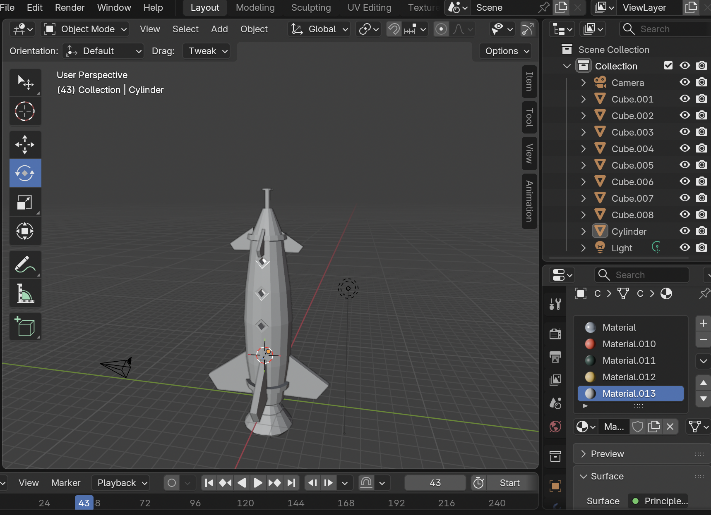
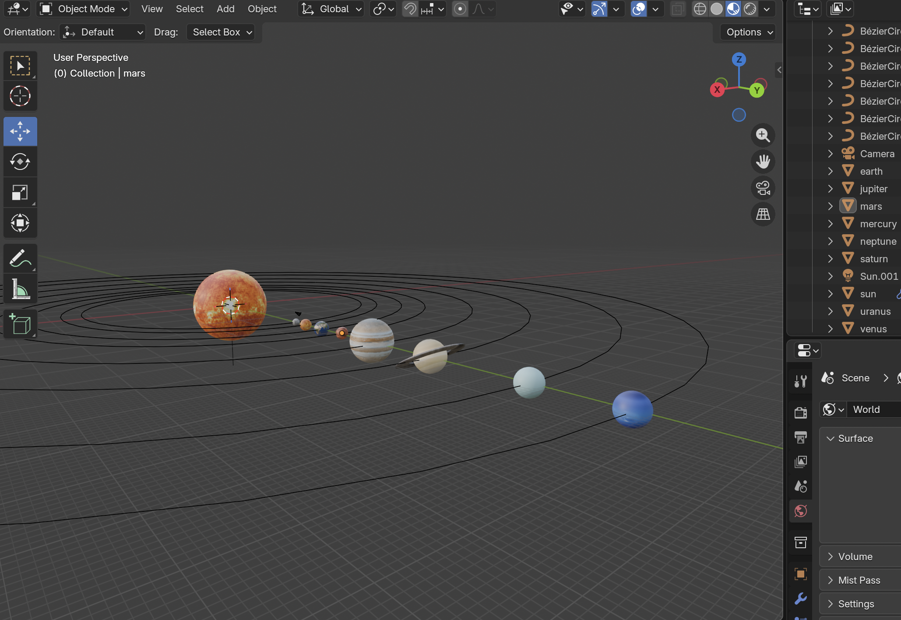
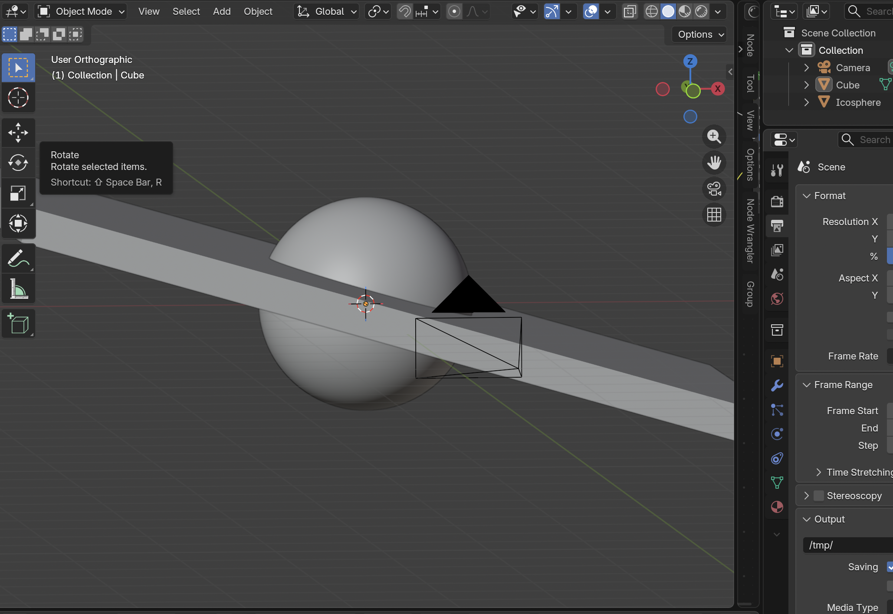
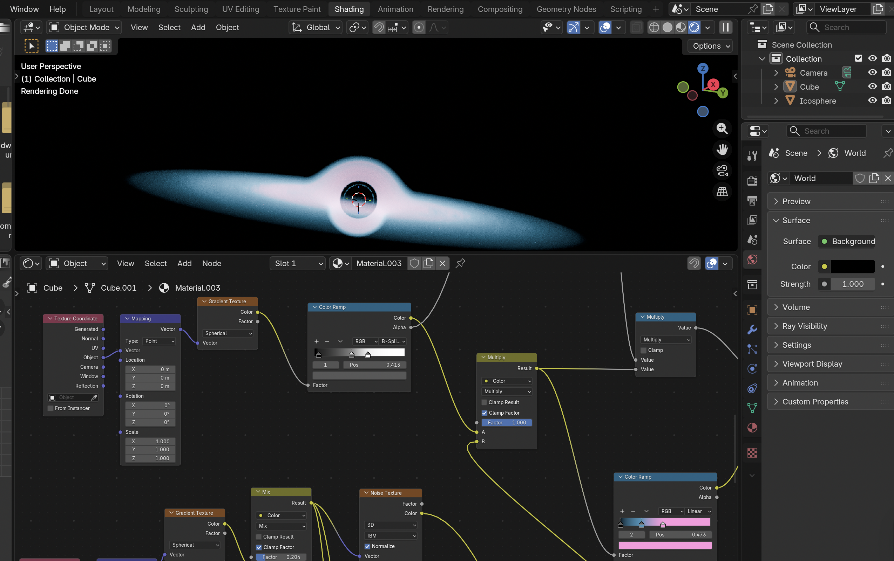
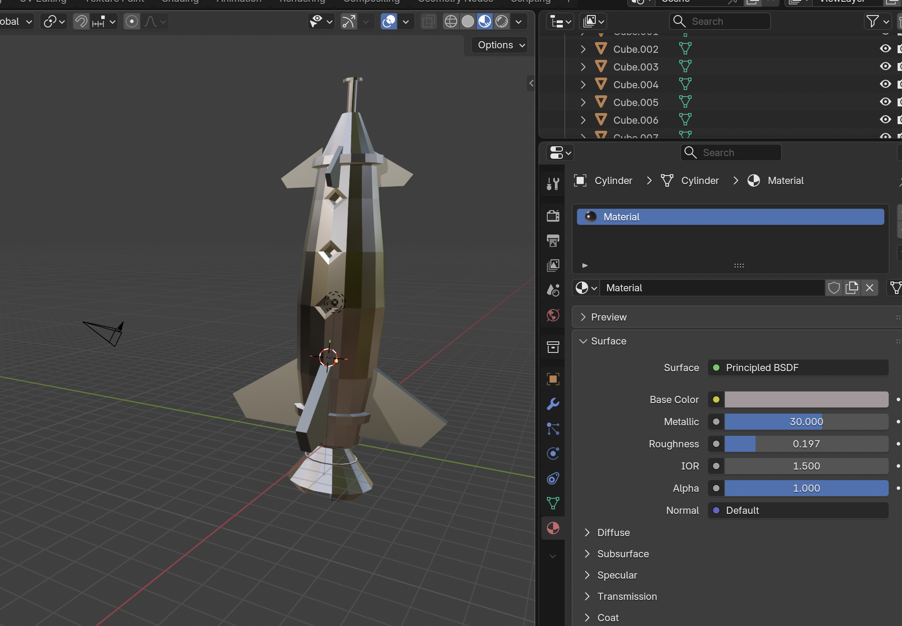

About Galaxy Explorer
Galaxy Explorer is an interactive Web 3D application designed to allow users to explore space themed content using Three.js, Bootstrap, JavaScript and Blender. The website combines interactive 3D graphics, shaders, sound, animation and responsive web design to create an immersive educational experience about galaxies, planets and black holes.
Project Overview
The website contains multiple pages including a Home page, Explore page, Gallery page and About page. The Explore page contains interactive 3D scenes including a rocket model, an animated solar system and a procedural black hole shader effect. Users can interact with the models using orbit controls, camera controls, wireframe rendering and animation buttons.
3D Models Description
The Explore page contains three separate interactive scenes: a rocket model, a solar system simulation and a black hole shader scene. Blender was used to prepare and export the 3D models in GLB format because GLB files integrate efficiently with Three.js through GLTFLoader. The rocket model was imported into the scene and enhanced using positional audio to create a more immersive experience. OrbitControls were added to allow the user to rotate, zoom and inspect the model interactively. Additional controls were implemented to switch between camera views and toggle automatic rotation. The solar system model required more advanced scene management. Each planet was separated into its own orbit group so that planets could revolve around the sun while also rotating around themselves independently. Different orbit speeds and rotation speeds were assigned to each planet to simulate realistic planetary motion. JavaScript animation loops were used to continuously update orbital transformations in real time. Additional functionality was implemented to pause and resume planetary movement dynamically using interactive buttons. The black hole scene was developed using a custom GLSL shader. Instead of using a static 3D model alone, a procedural distortion effect was applied to a galaxy texture to create the illusion of gravitational lensing and space distortion. Mouse movement was connected to shader uniforms to create interactive distortion effects that respond dynamically to user input. This section of the project helped demonstrate more advanced rendering concepts beyond standard model loading.
The 3d models were inspired and supported by the following YouTube tutorials:
- https://youtu.be/DP43tY0y8ZY?si=Mx3jh92xQfA85xvl
- https://youtu.be/XWv1Ajc3tfU?si=RLuJhGySSTJz7kWH
- https://youtu.be/-8pcgtNDPsY?si=laBTXVOao-AgR62J



Challenges
One of the main technical challenges encountered during development involved transferring the black hole and galaxy models from Blender into Three.js using the GLB export format. The original Blender scenes relied heavily on shader nodes and procedural materials created inside Blender’s node editor. However, when exporting the models as .glb files, many of the textures, lighting effects and procedural shader elements did not transfer correctly into the web application. To overcome this limitation, the black hole effect was redesigned directly inside Three.js using GLSL shaders and ShaderMaterial. Another limitation is the metallic material for the rocket model, which also did not transfer well when exported, so I used an image texture instead.



Technology Used
- HTML5 for webpage structure
- CSS3 for styling and responsive layouts
- Bootstrap 5 for responsive UI components and layouts
- JavaScript for interaction and functionality
- Three.js for WebGL rendering and 3D graphics
- GLTFLoader for importing .glb 3D models
- OrbitControls for camera interaction
- Blender for 3D modelling and exporting assets
- GLSL shaders for the black hole effect
- Visual Studio Code for development and debugging
Rationale of Technology
Three.js was chosen because it provides powerful WebGL rendering capabilities while simplifying the process of creating interactive 3D scenes in the browser. Blender was selected for creating and exporting 3D models because it supports the GLB format and provides professional modelling tools. Bootstrap was used to ensure the website remained responsive across multiple screen sizes and devices. GLSL shaders were used to create advanced visual effects such as the black hole distortion animation which would not be possible using standard HTML and CSS alone.
Interaction and Features
- Interactive orbit controls for rotating and zooming the scene
- Switching between Rocket, Solar System and Black Hole scenes
- Dynamic wireframe rendering mode
- Animated planetary motion
- Planet orbit and self rotation simulation
- Camera view controls
- Audio playback for the rocket model
- Interactive black hole shader using mouse movement
- Responsive image gallery with filtering system
Implementation
The website was implemented using modular JavaScript. Three.js scenes were created dynamically inside a Bootstrap layout. GLTFLoader was used to import external .glb models into the scene. ShaderMaterial was used to implement the animated black hole effect. JavaScript functions were created to swap models, toggle wireframe rendering, pause planetary movement and control camera positions.
The website was designed to be responsive across different screen sizes using Bootstrap grid layouts and responsive utility classes. Images scale dynamically depending on viewport size and the navigation bar collapses correctly on smaller devices.
Testing Strategy
Several testing methods were used throughout development:
- Functional testing was performed to verify that buttons, navigation links and controls worked correctly.
- Usability testing was performed to ensure users could intuitively interact with the 3D scenes and camera controls.
- Cross-browser testing was conducted using Safari, Chrome and Edge.
Evidence of Testing
| Test | Result | Evidence |
|---|---|---|
| Navigation links | Passed | All pages correctly linked together |
| 3D Model Loading | Passed | Rocket, solar system and black hole models load successfully |
| Wireframe Toggle | Passed | All visible models switch between shaded and wireframe modes |
| Planet Animation | Passed | Planets orbit and rotate correctly |
| Responsive Layout | Passed | Website adapts correctly to mobile and desktop screens |
| Audio Playback | Passed | Rocket audio successfully plays and pauses |
Deeper Understanding
This project helped develop an understanding of scene hierarchies, shaders and WebGL rendering. Through implementing orbit groups and animation systems, I learned how object transformations work within Three.js. The black hole shader provided insight into fragment shaders, UV distortion and GLSL programming.
Implementation and Publication
The final project was tested locally using Visual Studio Code and Live Server and publically using the university Server. The website structure was organised into separate HTML, CSS, JavaScript and asset folders to improve maintainability. Before submission, the project folder was compressed and re-tested after extraction to ensure all models, textures and scripts loaded correctly.
View on uni server View on GitHub